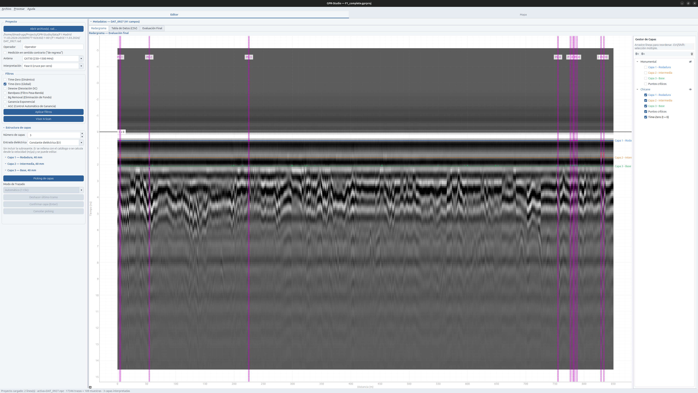
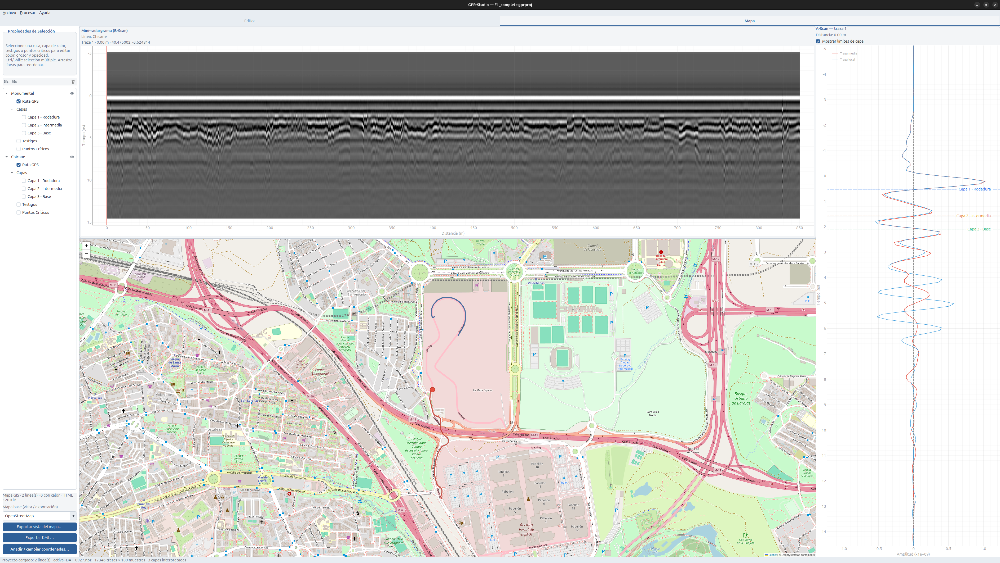

GPR-Studio — Software Avanzado de Auscultación GIS y Georradar
Desarrollador principal · Ingeniero de software y sistemas de información geográfica (GIS)
Diseño y desarrollo desde cero de una aplicación de escritorio profesional para el análisis y procesamiento masivo de datos de georradar (GPR). El sistema moderniza la auscultación de firmes e infraestructuras lineales (carreteras, pistas de Fórmula 1) uniendo el procesamiento avanzado de señales físicas con la visualización geoespacial interactiva en un entorno de alto rendimiento.
Galería


El desafío
La auscultación de infraestructuras mediante georradar genera volúmenes masivos de datos: archivos .rad compuestos por miles de trazas y muestras. El análisis tradicional obligaba a procesar cada línea de forma aislada, con software heredado poco intuitivo y desconectado del contexto geográfico. El reto era construir una herramienta escalable y reactiva para analizar decenas de kilómetros de trazado a la vez, cruzando en tiempo real las anomalías dieléctricas del subsuelo con su posición GPS.
Arquitectura de la solución
Para mantener fluida la interfaz con grandes matrices de datos, el sistema separa el motor de la vista y asigna una responsabilidad a cada capa:
- Motor de procesamiento. Backend en Python que gestiona la memoria multilínea, aplica filtros matemáticos sobre las matrices de datos con SciPy y NumPy, y conserva el estado de las capas estructurales interpretadas.
- Capa de presentación y controladores (PyQt6). Controladores independientes para el editor y el mapa reaccionan a los cambios de estado del motor. La lógica de negocio no se mezcla con la vista.
- Puente bidireccional GIS. Un visor web embebido inyecta HTML y JavaScript dinámico con Folium y Leaflet, y se comunica con la aplicación de escritorio mediante canales web.
Innovaciones
- Procesamiento multilínea por lotes. Carga en memoria y renderizado asíncrono de varios tramos de radar a la vez, sin bloquear la interfaz.
- Sincronización espacial bidireccional. El radargrama y el mapa GIS están conectados. Mover el cursor sobre una onda actualiza un marcador en el mapa, y al revés, de modo que cualquier anomalía del subsuelo se localiza sobre el trazado.
- Algoritmos de smart picking. Detección automática de interfaces dieléctricas por el centro de onda o por los picos de amplitud, para completar el espesor de las capas asfálticas.
- Gestor de capas estilo GIS. Árbol de visibilidad con modo exclusivo para edición y modo concurrente para visualización. Los técnicos encienden, apagan y reordenan perfiles de distintas capas físicas.
Stack tecnológico
- Python 3.10+
- PyQt6 (interfaz y arquitectura de eventos)
- NumPy y SciPy (Time-Zero, ganancia exponencial y filtros paso banda)
- Folium / Leaflet (cartografía interactiva y mapas de calor)
Desarrollo corporativo bajo confidencialidad. El código fuente no se publica.
Impacto
El procesamiento y el marcado de capas, que antes se hacía línea por línea, pasa a gestionarse de forma centralizada. Los mapas de calor de constantes dieléctricas y la detección de puntos críticos aportan una base para el mantenimiento predictivo de infraestructuras de alta exigencia.